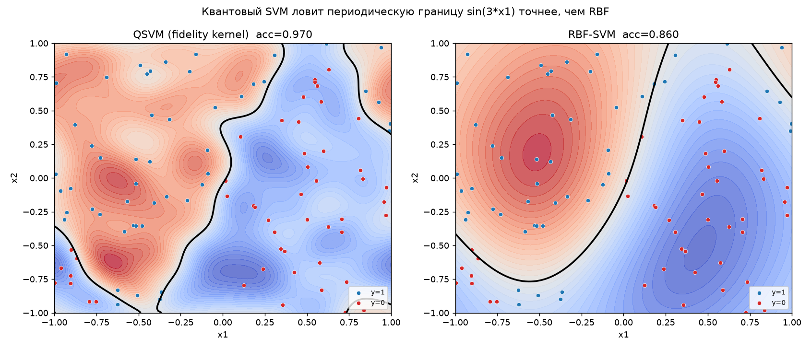
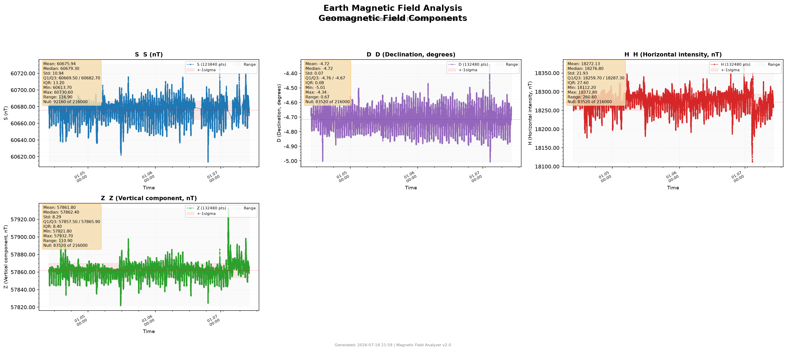

7 реальных задач, выполненных автономным агентом: GPU-продукты, инфраструктура, квантовое ML, наука. Логи опубликованы в очищенном виде (без ключей, токенов и адресов).
📹 Все видео и фото с демонстрациями →
Задача:
Обучить классификатор изображений и дать пользователю удобный интерфейс для проверки своих картинок.
Что сделал агент:
CUDA available: True · GPU: NVIDIA L4 Model trained: 73.85% Web UI: Gradio, порт 7860
Результат:
Полный цикл «обучение на GPU → деплой → готовый веб-продукт».
Проблема:
VPS с NVIDIA L4: нет драйверов, нет pip, PyTorch не видит GPU.
Решение:
Автодиагностика → драйверы NVIDIA → нюанс: драйвер встал под новое ядро, агент доустановил модули под работающее ядро без перезагрузки → pip + PyTorch CUDA 12.1 + TensorFlow + Jupyter → тестовое обучение.
PyTorch 2.5.1+cu121 · CUDA: True · NVIDIA L4 Loss: 1.04 → 0.83 за 0.54 с
Результат:
Сервер готов к обучению нейросетей за ~15 минут.
Задача:
Предсказать, проникает ли молекула через гематоэнцефалический барьер (скрининг лекарств, датасет несбалансирован: 76.5% BBB+).
Что сделал агент:
AUC = 0.91 · GPU: NVIDIA L4 · train: 1.68 с Loss: 0.6859 → 0.3294
Результат:
Сильный baseline против квантовой модели — корректный стандарт QML-исследований.
Задача:
Сравнить квантовое fidelity-ядро (4 кубита, data re-uploading) с RBF-ядром на данных с периодической границей sin(3·x₁).
Что сделано:
Квантовое ядро в PennyLane → SVC(kernel='precomputed') → контурные границы решений → веб-приложение Gradio со слайдерами x₁/x₂.

Результат:
QSVM ловит периодическую границу точнее классического RBF (RBF ≈ 0.86 на тесте).
Задача:
Обработать и визуализировать компоненты геомагнитного поля (S, D, H, Z) со статистикой и детекцией аномалий.
Что сделано:
Magnetic Field Analyzer v2.0: 216 000 измерений на компоненту, медианы/квартили/σ, коридоры ±1σ, детекция выбросов.

Результат:
Дашборд по магнитометрии; работа выросла из научных проектов (дипломы конференций).
Задача:
Обучить нейросеть на MNIST и выдать отчёт в Markdown.
Что сделал агент:
Скачал датасет с HuggingFace (streaming) → обучил сеть 784→128→10 (101 770 параметров) → сгенерировал отчёт.
Test Accuracy: 97.04% Epochs: 3 · Loss: 0.338 → 0.106
Результат:
Автономный пайплайн «данные → обучение → отчёт».
Ситуация:
При запуске локального ML-пайплайна агент столкнулся с ошибками в коде и сменой источника данных.
Что сделал:
Проанализировал трейсбек → исправил код → повторил. Когда стриминг датасета оказался недоступен — переключился на запасной источник и довёл обучение до конца → Markdown-отчёт с метриками.
[SELF-HEAL] ошибка → анализ → исправление → повтор Итог: Exit: 0, отчёт сгенерирован
Результат:
Задача выполнена без вмешательства человека — это и есть автономность.